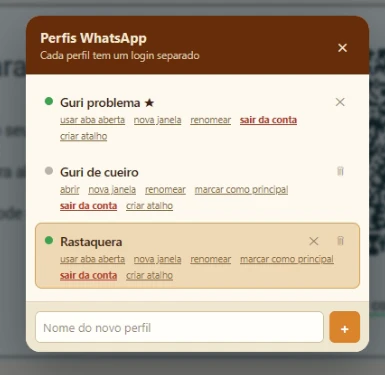
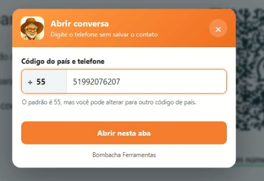
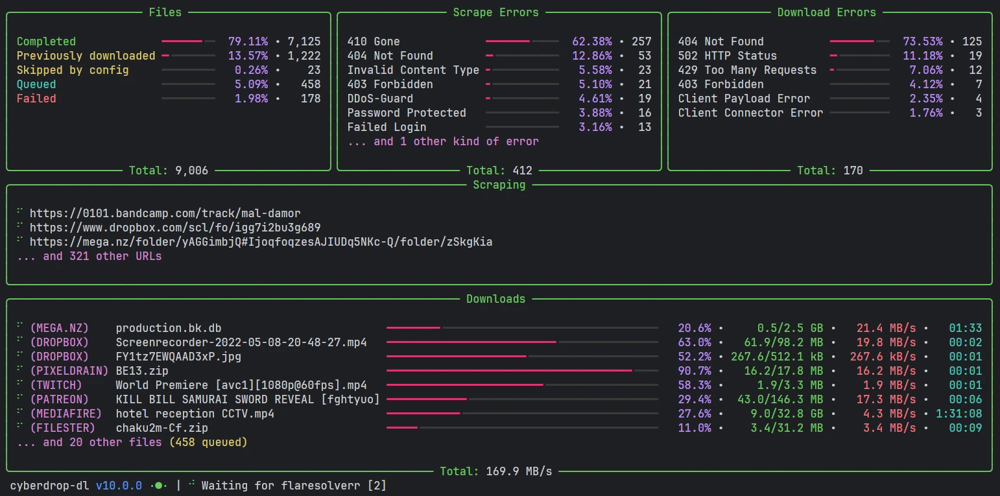

Windows
Recorta Fácil
Corte vídeos e arquivos MP3 de forma rápida, fácil e intuitiva, sem rodeios e sem dificuldade.
Ver detalhesAqui você encontra nossos programas e extensões que vão trazer mais praticidade para sua navegação!
Programas e extensões reunidos em um único lugar, com acesso simples e direto.
Conheça os programas já publicados pela Bombacha Ferramentas.
Corte vídeos e arquivos MP3 de forma rápida, fácil e intuitiva, sem rodeios e sem dificuldade.
Ver detalhes

WhatsApp mais prático para Windows, com janela própria, abertura por número e suporte a até dois perfis em abas diferentes.
Ver detalhesBaixou, apareceu, usou. Organize downloads com popup de ações rápidas para abrir, copiar, arrastar ou extrair arquivos.
Ver detalhes
Baixe vídeos e arquivos pelo navegador com um clique usando o botão “↓ Cyberdrop”.
Sites suportados: Bunkr, GoFile, MediaFire, PixelDrain, Cyberdrop, Cyberfile, MEGA, Google Drive, Dropbox, Catbox, Litterbox, FileDitch, Buzzheavier, Imgur, ImgBox, ImageBam, ImageVenue, Flickr, Giphy, Streamable, Dailymotion, Odysee, TikTok, Reddit, Bandcamp e Cloudflare Stream.
Ver detalhesConsulte os jogos de hoje, amanhã e dos próximos dias, com horários e canais de transmissão.
Ver detalhesFerramentas para instalar no navegador e usar com poucos cliques.
Avisa quando uma resposta de IA termina e pode tocar um som discreto enquanto a resposta está sendo gerada.
Ver detalhesMostra jogos, horários e canais, pode emitir alertas antes das partidas e sincronizar preferências com o site.
Ver detalhesExtensão para baixar vídeos e páginas direto no navegador. A versão atual funciona melhor no Firefox.
Ver detalhesReúne temporizador, alarme e cronômetro em uma extensão leve para o navegador.
Ver detalhesSe algum programa ou extensão foi útil para você, considere contribuir com qualquer valor. O apoio ajuda a manter e melhorar os projetos.